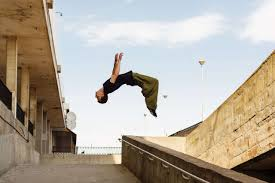
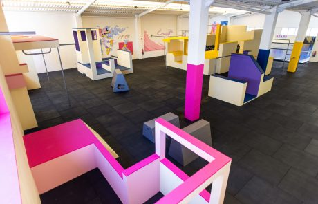
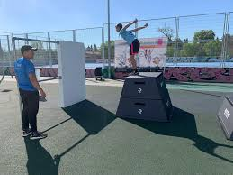

La Calle
Esta disciplina se originó y creción usando el moviliario urbano para su desarrollo, necesitando de una imaginación muy fuerte para poder lograr mejorar y poder adaptarte a este entorno. No es el medio más seguro para practicar debido a multiples factores externos como la humedad, limpieza y tipo de materiales que no siempre permiten el óptimo desempeño de los practicantes.

Los gimnasios
Los gimnasios especializados en enseñar este tipo de actividades, aunque son escasos, ofrecen un entorno muchisimo más seguro para que cualquiera que se esté iniciando en este mundo pueda hacerlo con un menor riesgo de lesiones debido a las comodidades de las que se disponen: colchonetas, muros blandos, muros móviles,... Además de tener personal especializado que te ayuda a llevar una mejor progresión

Los Parques
Los denominados Parkour Parks son el punto intermedio entre saltar en cualquier sitio en la calle y un gimnasio, debido a que cuenta con ciertas medidas de seguridad que no te puedes encontrar asegurado en la calle, como por ejemplo el material de los muros y un suelo especializado en la recepción de impactos.

{kind=link}
{kind=link}
{kind=link}